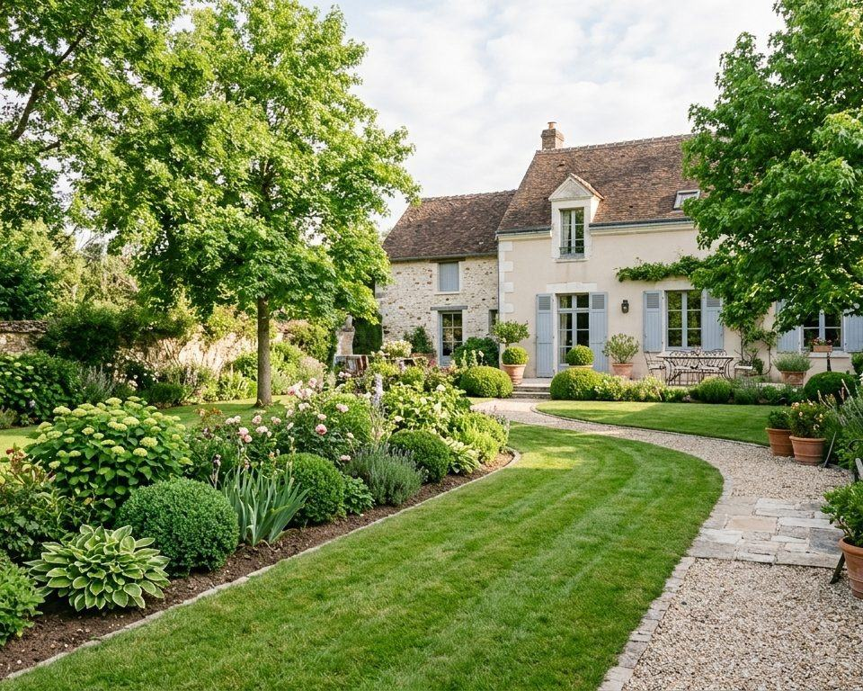
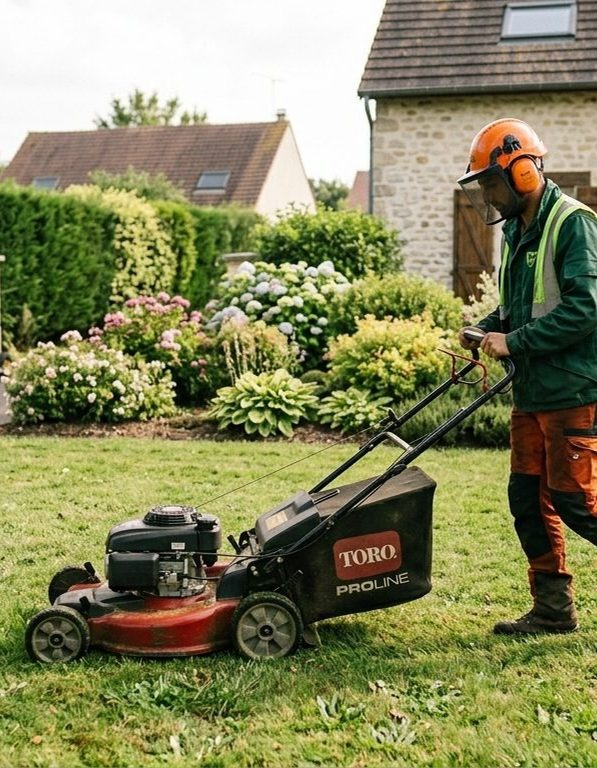

Création de jardins
Création de massifs, d'allées et de pelouses, adaptée à la forme de votre terrain et à vos envies.
En savoir plus
Paysagiste à Poissy (78)
La Fabrique de Jardin aménage et entretient les jardins à Poissy, dans les Yvelines. Parlez-nous de votre projet.
Nos prestations
Création, plantations, entretien : choisissez ce dont votre jardin a besoin.
Création de massifs, d'allées et de pelouses, adaptée à la forme de votre terrain et à vos envies.
En savoir plus
Plantation d'arbres, d'arbustes et de vivaces, pose de gazon ou semis pour installer ou refaire une pelouse.
En savoir plus
Tonte, désherbage et ramassage des feuilles pour garder un jardin net au fil des saisons.
En savoir plusÀ propos
Jean Demory dirige La Fabrique de Jardin, à Poissy, dans les Yvelines. L'entreprise aménage et entretient des jardins.
Pour parler de votre projet, appelez directement ou envoyez une demande depuis la page de contact.
Contact
Décrivez votre projet par téléphone ou depuis le formulaire de contact.
Paysagiste à Poissy (78) : création, plantations et entretien de jardins.
© La Fabrique de Jardin · Maquette de démonstration